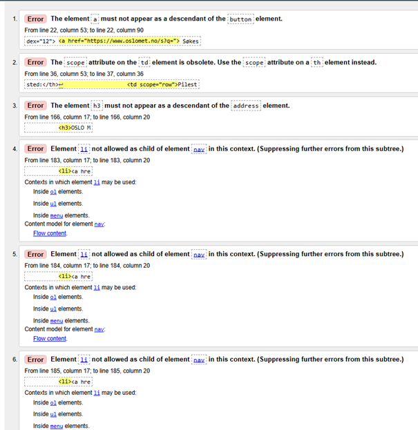
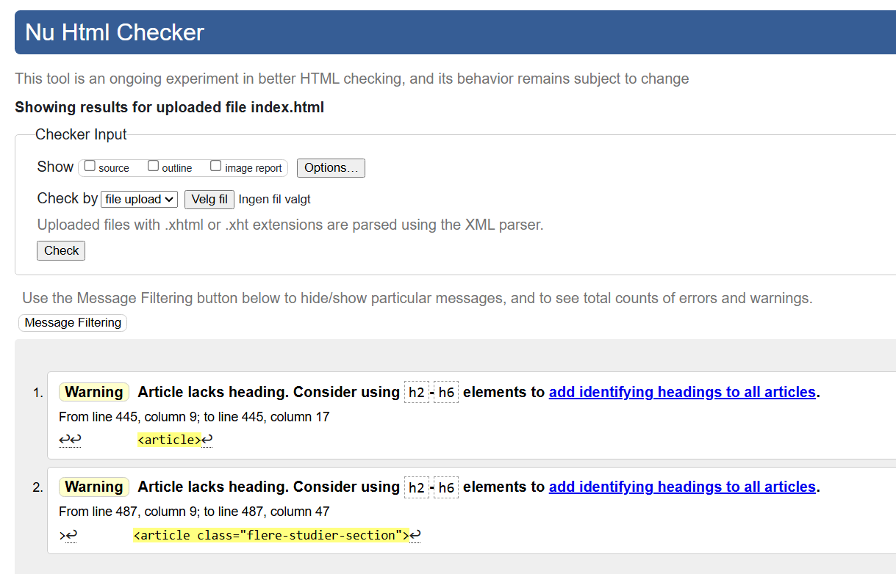
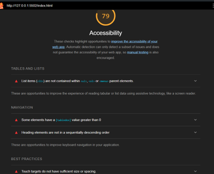
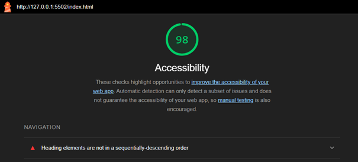
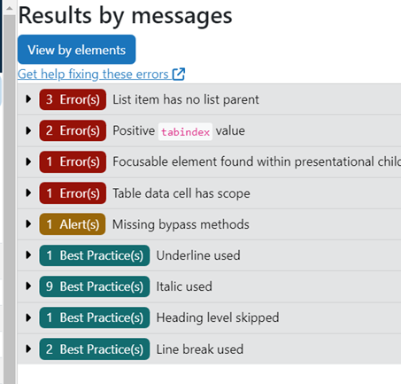
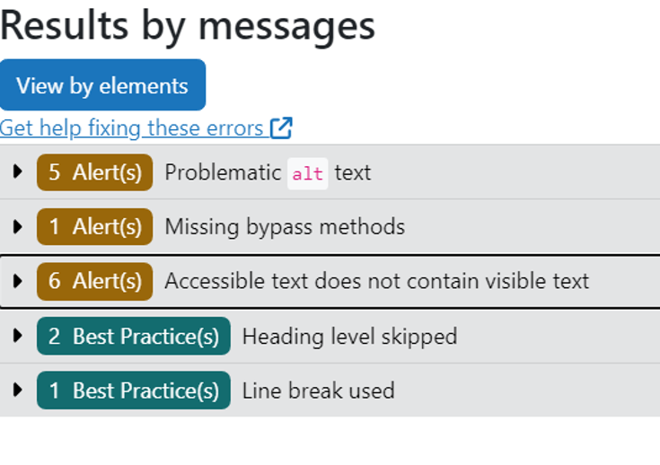

Kort om tilgjengelighet for denne siden
Tilgjengelighet / universell utforming er et viktig konsept som går ut på at flest mulig kan kunne utnytte alt. På nettsteder er det derfor viktig at personer med hemmede sanser eller funksjoner har muligheten til å navigere og hente informasjon fra nettsiden din. Forhåpentligvis er det da tydelig at vi har tatt flere grep for å gjøre denne nettsiden mer universell utformet, for det har vi gjort!
Validering
Vi validerte koden hos W3.org , hos Lighthouse og hos ARC Toolkit:
Resultater fra W3.org
Første validation-test:
Siste validation-test:
Resultater fra Lighthouse:
Første validation-test:
Siste validation-test:
Resultater fra ARC Toolkit:
Første validation-test:
Siste validation-test:
Oppsummert resultater:
| Resultater | Første test | Siste test |
|---|---|---|
| W3.org | Errors: 6 | Errors: 0 |
| Lighthouse | Score: 79/100 | Score 98/100 |
| ARC Toolkit | Errors: 5 relevante av 8 Alerts: 1 relevant av 1 Best practices: 11 relevante av 13 | Errors: 0 relevante av 0 Alerts: 0 relevante av 11 Best practices: 3 relevante av 3 |
De andre html-sidene hadde ingen/irrelevante problemer fra de samme validitet-nettsidene. CSS testet vi tillegg og den hadde ingen problemer for W3.org.
Endringer/valg for nettsiden
Først har vi lagt ved alternative tekster for alle bildene i nettsiden slik at man kan finne informasjonen for de tilfellene hvor de ikke kan hente informasjonen fra bildet.
Et annet viktig område for universell utforming er fargekontraster og fargebruk. Derfor har vi vært bevist med fargene vi har brukt, at det ikke skal være «dødt» for da virker nettsiden uattraktivt, men også at den ikke skal ha for mange farger, for det kan bli overbelastende. I tillegg har vi sørget for å vise med farger når noe hoveres eller fokuseres. Det er også viktig at farger ikke er det eneste som skiller ulike elementer, og derfor har vi implementert tiltak som cursor:pointer, og borders.
For funksjonalitetens skyld holdes nettsiden, men også koden ryddig og strukturert slik at man enkelt kan oppfatte nettsiden, og skjermlesere og andre verktøy for nettsider funker fint. Blant annet plasserte vi innholdet på midten av nettsiden slik at det er mer behagelig å lese, også holdt vi oss for det meste til kun semantiske elementer for layout foruten om enkelte div-elementer.
Etter valideringen fikk vi opp en feil under interaktivitet, hvor vi hadde en lenke inni en button i menyen. Først reflekterte vi over hvorfor det var feil siden det ikke var åpenbart for oss med det første, men så forstod vi at det generelt er dårlig praksis for nettlesere og brukeropplevelsen å ha en lenke inni en knapp som egentlig ikke gjør noe.
Noe valideringen ikke fortalte oss da, var at nettsiden vår ikke var godt tilpasset for tab-indeks. Vi hadde originalt satt menyen til display:none med mindre den blir samhandlet med, men da funket det ikke å fokusere på submenyen sine lenker med tab siden de ikke var displayed. Derfor fant vi en litt utradisjonell måte å holde submenyen skjult uten å bruke JavaScript, som var å sette opacity=0 og font-size=0 slik at man ikke kan fokusere på lenkene heller. På denne måten fikk vi beholde nettsiden slik vil ville, og tabindex til å funke bra for nettsiden vår, noe som er viktig for både interaktiviteten og funksjonaliteten for nettsiden.
Oppsummert har vi gjort våres beste for å få flest mulig til å kunne bruke nettsiden vår effektivt. Dette er noen av mange feil vi har rettet opp, og vi har lært masse av de 😊